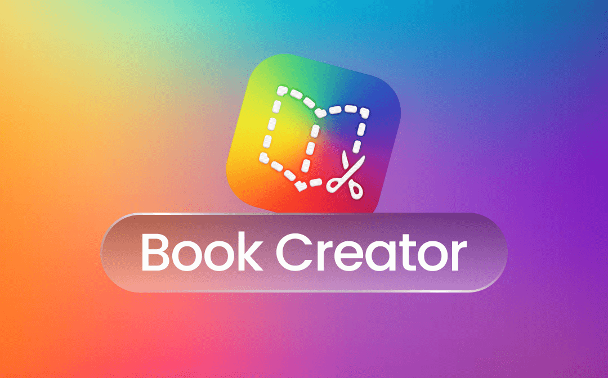

Vídeo interactivo

¿Por qué he elegido esta herramienta digital?
He elegido esta herramienta porque es muy intuitiva y visual, lo que facilita que el alumnado de 1º de Primaria pueda participar activamente en la creación del cuento sin necesidad de tener una alta competencia digital. Pueden añadir texto, imágenes, dibujos e incluso grabar su voz, lo que hace que el proceso sea más dinámico y motivador.
Además, Book Creator permite trabajar distintos lenguajes a la vez: el escrito, el visual y el oral. Esto es especialmente importante porque no todo el alumnado tiene el mismo nivel de expresión escrita, y así todos pueden aportar de alguna manera al producto final. También es un recurso muy útil para alumnado que no conoce bien el español, ya que el apoyo visual a través de imágenes y dibujos facilita la comprensión y les permite participar en la actividad sin depender únicamente del lenguaje escrito.
También encaja muy bien con una metodología activa, motivadora y participativa que utilizo en mis clases, ya que el alumnado no solo consume contenido, sino que lo crea y se siente protagonista de su propio aprendizaje. De este modo, el aprendizaje tiene más sentido para ellos/as, al estar elaborando su propio cuento a partir de vocabulario y situaciones cotidianas de su vida diaria.
En cuanto al contexto del centro, contamos con ordenadores Chromebooks y acceso a internet, lo que hace que su uso sea viable y accesible. Además, es una herramienta que funciona directamente en el navegador, por lo que no requiere instalaciones complejas y se adapta perfectamente a este tipo de dispositivos.
Por otro lado, considero que es adecuada para la edad del alumnado porque permite un uso guiado pero también fomenta la autonomía progresiva, adaptándose a diferentes ritmos de aprendizaje.
Finalmente, una de las ventajas que más valoro es que permite compartir fácilmente el producto final con las familias, lo que favorece la implicación de estas en el proceso educativo y da visibilidad al trabajo realizado en el aula.
En definitiva, utilizo Book Creator porque permite crear un producto significativo, accesible y motivador, desarrollando al mismo tiempo la creatividad y la competencia digital del alumnado, ampliando así su vocabulario.